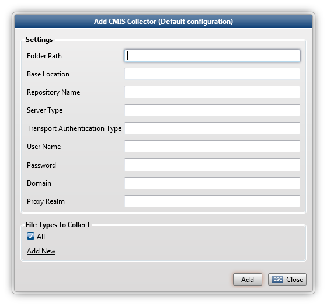

The CMIS Collector collects files from Alfresco and SharePoint CMS systems.

SharePoint CMIS contains a file stream issue. This issue causes files to be streamed entirely instead of per chunk defined by offset and length.
A current workaround for SharePoint consists of a customized ZyLAB ContentService to be installed on the SharePoint environment (see http://msdn.microsoft.com/en-us/library/ms464040.aspx )
If server-side installation is not an option, the user can configure a maximum response size in the Maximum Response Size parameter in the settings file. The maximum response size equals the maximum size of files that can be downloaded from the SharePoint repository.
Together with the SharePoint File Streaming parameter set to "MicrosoftMaxResponseSize" only files smaller than the maximum response size will be downloaded, thus preventing exceptions in the WCF handling of the download stream.
Once Microsoft has fixed the file stream issue, the SharePoint File Streaming parameter can be set back to Microsoft.
Repository Name
SharePoint: Specify the CMIS repository of interest. It can be a document library/website on the SharePoint Server.
Alfresco:Alfresco Repositories are different than SharePoint ones. Only the Main Repository exists. Accessing the data is done via folders.
Server Type
The Server Type is Alfresco or SharePoint.
Transport Authentication Type
Define the Transport Authentication Type. This depends on how the SharePoint or Alfresco server is set up. It can be: NTLM, Basic or Digest.
User Name
Define the user name of the person that will connect to the SharePoint or Alfresco site.
Password
Define the password of the person that has credentials to connect to the SharePoint or Alfresco site.
Domain
Define the domain of the SharePoint or Alfresco server.
Proxy Realm
Define the realm of the SharePoint or Alfresco Server.
|
|
|